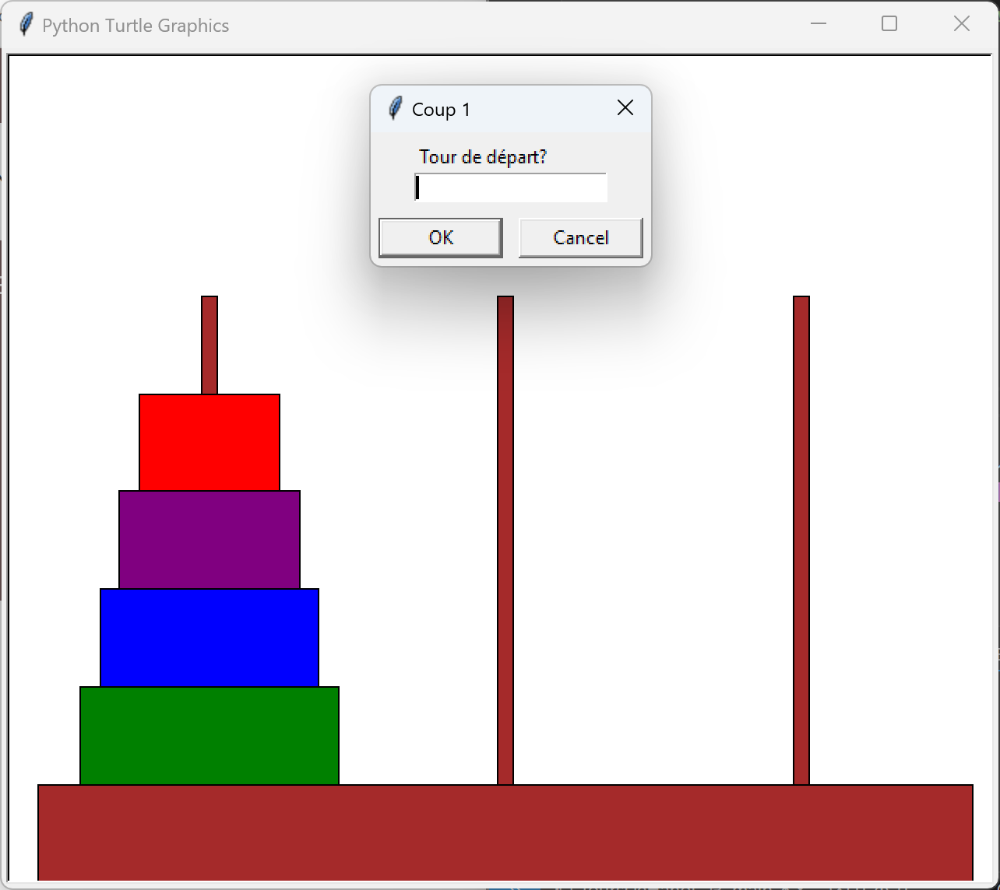
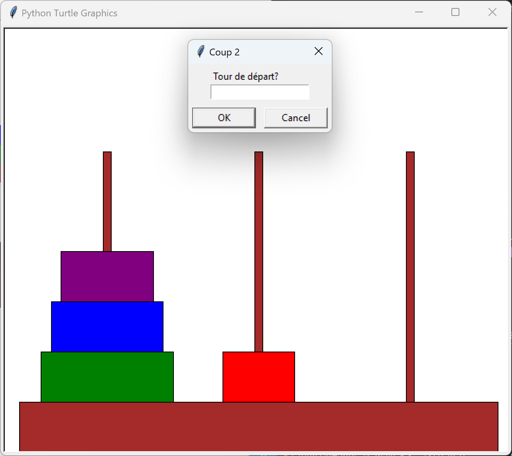
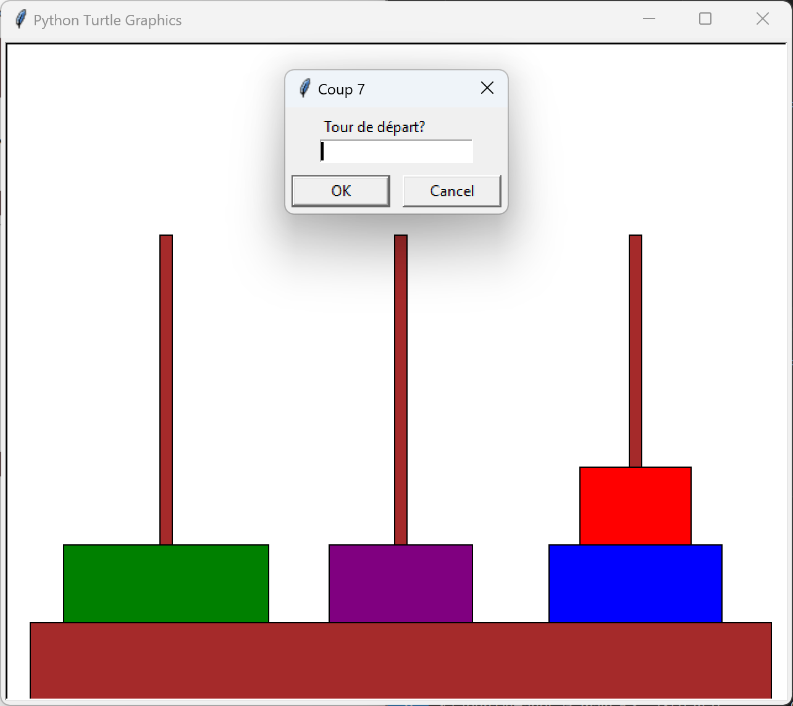

Jeu des Tours de Hanoï
Cliquez
ici pour
accéder au jeu
Cliquez sur le bouton vert "Run" en haut de la page

Ce projet est un programme en Python utilisant la fenêtre graphique turtle. L'objectif
est de simuler le jeu des tours de Hanoï. Le but est simple, après avoir choisi le nombre de
disques avec lesquels le joueur veut lancer la partie, le jeu débute. Celui-ci comporte 3 piliers et
les disques sont empilés du plus grand au plus petit sur la colonne de gauche. Pour gagner, le
joueur doit empiler ces mêmes disques sur la colonne de droite. Cependant, on ne peut déplacer qu'un
seul disque à la fois et un disque ne peut pas être déplacé sur une colonne comportant un disque
plus petit. Ici, le joueur a
choisi 4 disques pour la partie.

Ensuite, une fenêtre apparaît et demande au joueur de saisir la tour de départ (de laquelle le
disque le
plus en hauteur sera déplacé). Puis, dans un second temps, demande au joueur de saisir la tour sur
laquelle il veut déposer le disque sélectionné. Si le disque ne peut pas être déplacé, le joueur ne
peut pas le sélectionner et le jeu lui redemandera une valeur. Si le joueur sélectionne une colonne
sur laquelle le disque ne peut pas être posé (car un disque plus petit est déjà sur cette même
tour),
le jeu fera de même et redemandera une colonne à choisir. Lorsqu'un coup est joué, la fenêtre
graphique change en conséquence.

Si le joueur perd espoir, il peut abandonner la partie en saisissant -1 (les règles et
commandes sont énoncées en début de jeu si le joueur le demande). À ce moment-là, il peut voir la
partie avec les meilleurs coups à jouer pour gagner le plus efficacement possible. À la fin d'une
partie, le jeu demande le nom du joueur qui vient de finir la partie et s’il veut relancer le jeu.
Lorsque le jeu est quitté, un classement des différents joueurs sur les parties à différents nombres
de disques est affiché. L'un est en fonction du
nombre de coups pour gagner et l'autre en fonction du temps de jeu pour atteindre la victoire.